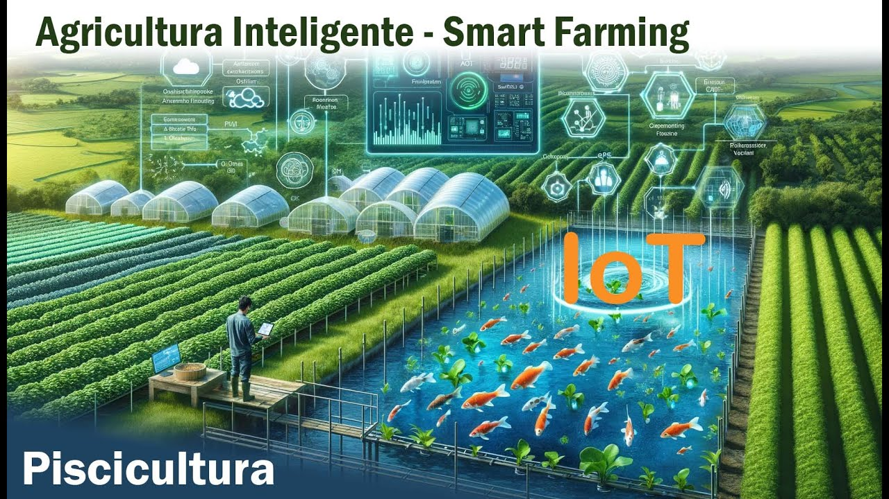
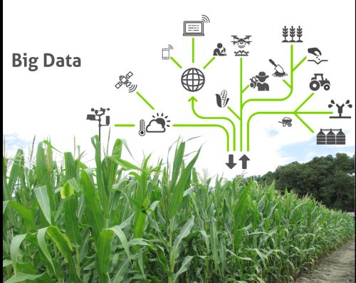

Tecnologías Clave

Drones
Optimiza el monitoreo de cultivos con imágenes aéreas y análisis en tiempo real.

IoT
Sensores inteligentes para rastrear datos sobre humedad, temperatura y fertilización...

Big Data
Analiza grandes volúmenes de datos para tomar decisiones informadas.